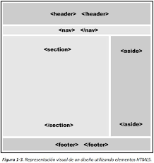

SUBTÍTULO O INTRODUCCIÓN.
DESARROLLO DEL CONTENIDO DEL ARTÍCULO.
El lenguaje HTML5, define mediante etiquetas elementos dentro de un documento web. Estos elementos pueden ser de dos tipos
denominados, elementos de bloque y elementos en línea. Su nombre es debido a la forma en que ocupan espacio dentro del
documento que se está creando. Un elemento en bloque significa que el elemento ocupa todo el ancho del documento disponible
produciendo un retorno de línea al final del mismo. Por su parte, los elementos en línea por el contrario solo utilizan el
espacio que ocupan.
Las etiquetas div y span, no tienen ningún tipo de significado especial, solo que la primera se define como un elemento
de bloque y por tanto el navegador mostrara un salto de línea antes y después de la misma. Mientras que la segunda es un
elemento de línea.
Cuando se utilizan actualmente en un documento web, se pueden utilizar para establecer opciones de formato mediante hojas
de estilo a bloques completos o elementos individuales del documento. Las dos etiquetas en esta última versión del lenguaje
no disponen de atributos que aplicar a las mismas. Por ejemplo:
La BIOS pone las funciones básicas de un ordenador a disposición del usuario. Al encenderlo, comprueba si las partes más importantes son funcionales, como la memoria, la CPU y otros componentes de hardware. Esta prueba se denomina autoprueba de arranque o power on self test (POST).
Es la primera de las nuevas etiquetas de HTML5, incluidas dentro de la denominación de “web semántica”, que consiste en la
utilización de estas etiquetas para la estructura del documento, dotando al documento de sentido en su estructura y formato
por el nombre de las etiquetas. La finalidad de la etiqueta es la de especificar un encabezado dentro de un documento o
sección. Se suele utilizar como contenedor para el contenido de introducción o para enlaces de navegación.
Se pueden utilizar varios encabezados con esta etiqueta dentro de otras etiquetas semánticas. Siempre y cuando estas no sean
encabezados, pies de documento, o etiquetas de tipo encabezado como la de dirección. Por ejemplo:
¿Alguna vez te has preguntado cómo los programas de software gestionan y organizan la información? ¿Qué sucede internamente cuando interactúas con una aplicación en tu dispositivo? La respuesta se encuentra en la Programación Orientada a Objetos, un enfoque fundamental en el mundo de la programación. Nuestro objetivo con este artículo y los sucesivos, es explorar a fondo este concepto centrándonos en Java, un lenguaje de programación ampliamente utilizado.
En el complejo mundo de la programación, una de las metodologías más influyentes es la Programación Orientada a Objetos
(POO). Esta metodología se ha convertido en un pilar fundamental para el desarrollo de software de alta calidad y
eficiencia. Comenzaremos por comprender qué es la POO y por qué es tan importante en el desarrollo de software moderno.
Luego, nos adentraremos en el mundo de los objetos en Java, examinando sus conceptos fundamentales y explorando ejemplos
prácticos que te ayudarán a entender cómo funcionan.
Posteriormente, nos sumergiremos en las clases en Java, que son los moldes para la creación de objetos. Analizaremos los
conceptos esenciales relacionados con las clases y proporcionaremos ejemplos prácticos que te mostrarán cómo definir y
utilizar clases en tus programas. La POO se basa en el concepto de “objetos”, que son las piezas fundamentales que permiten
modelar el mundo real dentro de un programa. ¡Acompáñanos en este artículo y descubre cómo esta metodología revoluciona
la forma en la que creamos software!
Perteneciente también a las nuevas etiquetas semánticas. Permite especificar un conjunto de vínculos o enlaces de navegación. No significa que todos los enlaces de navegación por los documentos del sitio, hayan de estar situados en el contenido de la etiqueta. Pero es una forma de agrupar opciones de navegación tipo menú o mapas de enlaces del sitio. (El ejemplo lo encontramos en Cuerpo del Documento 1, donde agruparemos un conjunto de etiquetas de enlace.).
Pertenece también a las etiquetas semánticas, nuevas en HTML5, y permite definir secciones en el documento como pueden ser capítulos, encabezados, pies, o cualquier otro tipo de sección en el documento.
Permite especificar contenido independiente o autónomo. De forma que debería que ser posible distribuir el mismo independientemente del resto del documento web. Perteneciente también la etiqueta a las denominadas semánticas. Se indica que su posible utilización podría ser para mensajes de foros, noticias, artículos de blog, comentarios, etc.
DESARROLLO DEL CONTENIDO DEL ARTÍCULO.
Permite definir contenido al margen del contenido principal, que mantenga relación con el mismo.

Permite especificar contenido autónomo como pueden ser ilustraciones, diagramas, fotos, listas de código, etc. Junto a la etiqueta, se suele utilizar otra etiqueta denominada figcaption /figcaption, la cual permite especificar una denominación o nombre para la figura insertada. Por ejemplo:
Permite definir un pie de página de un documento o sección. Se recomienda que el contenido de la etiqueta ha de guardar relación con el elemento que la contiene. Si se utiliza a pie de página, suele contener información relativa al autor del documento, copyright, enlaces, términos de uso, información de contacto, etc. Un documento web, puede contener varias etiquetas footer situadas en diferentes sitios, correspondiéndose con secciones, artículos, etc. Por ejemplo:
Permite definir una hora con formato de 24 horas, o una fecha en formato gregoriano, opcionalmente con un tiempo y desplazamiento de zona horaria. Se debe de utilizar para establecer una codificación de fecha y hora, de forma legible para la máquina. De manera que los agentes de usuario y motores de búsqueda, puedan establecer recordatorios, eventos programados, o resultados de búsqueda más inteligentes. Por ejemplo:
a las
Permite definir contenido que el usuario puede visualizar u ocultar según le interese. La etiqueta permite cualquier tipo de
contenido, y para visualizar el mismo se ha de realizar un clic sobre el símbolo correspondiente en el navegador, para que la
etiqueta muestre su contenido, ya que por defecto y si no se especifica lo contrario se establece como oculto.
La etiqueta tiene solo un atributo, open, si se especifica el contenido de la etiqueta se muestra visible al cargar el
documento web.
Para que se visualice como título de la etiqueta, sirviendo a su vez de texto de referencia, para visualizar o no el contenido, se utiliza la etiqueta summary /summary, en la que se ha de teclear el título que se desea visualizar, esta etiqueta de título ha de ser la primera etiqueta del contenido.